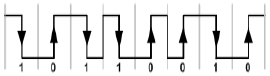
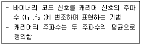
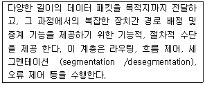
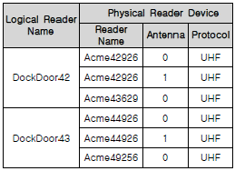
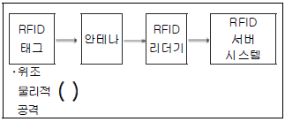
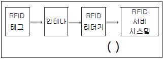
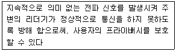
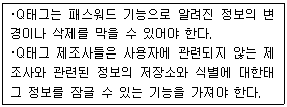

RFID-GL (2008-11-16 기출문제)
1과목: RFID 시스템 개요
1. 국내의 RFID 시스템에서 사용하고 있는 ISM(Industrial Science Medical) 밴드의 주파수 대역은?
- 125㎑ 대역
- 134㎑ 대역
- 2.45㎓ 대역
- 433㎒ 대역
(정답률: 68%)

2. 다음 중 UHF 대역의 RFID 시스템의 설명으로 틀린 것은?
- 433㎒ 대역이 포함된다.
- 900㎒ 대역이 포함된다.
- 일반적으로 인식 거리가 LF 대역보다 짧다.
- 배터리를 내장한 태그도 있다.
(정답률: 86%)
3. 다음 중 WORM(Write Once Read Many) 태그의 특징으로 맞는 것은?
- 모든 주파수 대역에서 사용 됨
- 배터리를 가진 능동형임
- 한번 쓰면 더 이상 데이터를 쓸 수 없음
- 인식거리가 Read only보다 넓음
(정답률: 86%)
4. RFID 태그의 특징이 아닌 것은?
- 바코드와 같이 단순인식 분야에도 사용이 가능함
- 일반적으로 태그칩과 안테나 혹은 코일로 구성 되어 있음
- 읽기만 되는(Read Only)태그는 없음
- 바코드에 비해 가격이 비쌈
(정답률: 78%)
2과목: RFID 기술
5. 동축 선로의 종단에 저항이 연결되어 있다고 할 때, 다음 설명 중 잘못된 것은?
- 반사값은 동축 선로의 특성 임피던스와 단저항 사이의 저항 차에 비례한다.
- 특성 임피던스와 부하의 저항이 같은 값을 갖는 경우 반사가 없고 동축선로로 인가된 전력이 최대로 부하로 전송된다.
- 전송선로의 특성 임피던스는 전송선로가 갖는 손실을 의미한다.
- UHF 대역 RFID에서 주로 사용하는 동축선로의 특성 임피던스는 50Ω과 75Ω 이다.
(정답률: 56%)
6. 송신기와 수신기 사이에 공기 매질에서 전파 손실이 23㏈ 라고 할 때 송신 전력의 몇 %가 수신기에 도달 하는가? (단, 안테나의 이득은 0㏈)
- 25%
- 5%
- 1.5%
- 0.5%
(정답률: 68%)
7. 다음 중 EIRP(Effective Isotropic Radiated Power)와 ERP(Effective Radiated Power)에 관한 설명으로 잘못된 것은?
- ERP는 반파장 다이폴 안테나를 기준으로 정의 한다.
- EIRP는 등방성안테나를 기준으로 정의한다.
- 미국과 유럽의 UHF 대역 방사 규격은 EIRP 기준 4W로 동일하다.
- ERP기준 2W는 EIRP기준의 3.28W에 해당된다.
(정답률: 81%)
8. 다음 중 후방 산란 변조(backscatter modulation) 방식에 대한 설명으로 틀린 것은?
- 리더와 태그는 전자파 결합 방식이다.
- 안테나를 통한 원거리장에서의 전자기파에 의해 이루어지므로 원거리장 조건인 λ/2π보다 가까운 거리에서 이루어진다.
- UHF 수동태그에서 이용한다.
- 태그의 레이더 단면적(RCS: Radar Cross Section)을 변화시키는 방식이다.
(정답률: 73%)
9. 전자파가 금속에 인가될 때 금속표면에서의 전자파의 특징을 설명한 것 중 잘못된 것은?
- 금속표면에서 전자파의 투과 정도는 표피 두께(skin depth)로 나타낸다.
- 금속의 투과 정도는 동작 주파수가 높을수록 높아진다.
- 금속의 투과 정도는 금속의 전도율이 높을수록 낮아진다.
- UHF 대역에서 유전체 투과 정도는 금속에 비해 매우 높다.
(정답률: 62%)
10. 다음 그림은 인코딩(encoding, 부호화)의 한 예를 보여주고 있다. 인코딩의 이름은?

- 맨체스터(Manchester)
- NRZ(Non Return to Zero)
- RZ(Return to Zero)
- PIE(Pulse Interval Encoding)
(정답률: 82%)
11. 다음 중 안테나에 관한 설명으로 틀린 것은?
- 일반적인 수동 안테나에서 송신 안테나와 수신 안테나는 구조적으로 다르다.
- 방사(radiation)를 효율적으로 하기 위해서는 안테나의 크기가 신호의 파장에 근접한 크기가 되어야 한다.
- 태그와 같이 소형 안테나 구조가 필요한 곳에서는 유도성 소자나 용량성 소자를 안테나에 추가함으로서 물리적인 크기를 줄일 수 있다.
- 일반적인 대역폭은 반사의 정도를 표시하는 정재파비(VSWR: Voltage Standing Wave Ratio)로 정의 한다.
(정답률: 55%)
12. 다음 중 전자파의 편파(polarization)에 관한 설명으로 틀린 것은?
- 선형 편파에서 전계의 방향이 지표면에 수직인 것을 수직편파, 지표면에 수평인 것을 수평편파라 부른다.
- 원형편파인 LHCP와 RHCP의 구분은 엄지손가락을 전파 진행 방향으로 하였을 때 전계의 방향은 나머지 손가락 방향이다.
- 원형편파는 수직과 수평편파를 이용하여 만들 수 있다.
- GPS나 위성 방송과 같은 위성 통신은 원형편파 보다는 일반적으로 선형편파를 선호한다.
(정답률: 74%)
13. 다음이 설명하는 변조방식은?

- ASK(Amplitude Shift Keying)
- FSK(Frequency Shift Keying)
- PSK(Phase Shift Keying)
- OOK(On-Off Keying)
(정답률: 82%)
14. 다음 중 UHF대역 수동형 태그의 표준으로 채택된 EPCglobal 클래스1 Gen2 태그의 메모리에서 암호가 저장되는 메모리의 영역은?
- Reserved 메모리
- EPC 메모리
- TID 메모리
- User 메모리
(정답률: 74%)
15. 다음 중 태그 칩의 디지털 회로에 포함되지 않는 것은?
- 메모리 인터페이스
- 상태머신
- 슬롯 카운터
- 후방 산란 변조기
(정답률: 72%)
16. 다음 중 태그 칩을 태그에 부착하기 위해 사용되는 방법과 관련이 없는 것은?
- 플립 칩
- 유체 자가 조립(fluidic self assembly)
- 와이어 본딩
- 표면 음향파
(정답률: 72%)
17. 다음 중 스트랩을 태그 안테나에 부착하기 위한 방법으로 적당하지 않은 것은?
- 전도성 필름을 이용하는 방법
- 초음파를 이용한 접합 방법
- 에폭시에 열을 가하는 방법
- 본딩 와이어를 이용한 방법
(정답률: 76%)
18. Bistatic 안테나의 송수신 격리도(Isolation)는 45dB이다. 송신부에서 0.5W의 신호를 송출하면 수신기에서의 송신 누설 전력(Leakage)은 얼마인가?
- -12dBm
- -15dBm
- -18dBm
- -20dBm
(정답률: 69%)
19. 수신되는 신호의 크기가 -50dBm이고, 10dBm의 LO신호가 믹서에 가해졌다. 이때 믹서의 이득이 -7dB라면, 믹서 출력에서의 원하는 신호의 전력은 얼마인가?
- -43dBm
- -57dBm
- 3dBm
- -40dBm
(정답률: 65%)
20. Gen2 사양에서 리더에서 태그로의 명령어 전달에 사용되는 변조 방식이 아닌 것은?
- DSB-ASK
- SSB-ASK
- PR-ASK
- QPSK
(정답률: 79%)
21. 다음 중 리더와 수동형태그의 인식 거리에 관한 설명으로 틀린 것은?
- 태그의 소모 전력이 작으면 인식거리는 늘어난다.
- 안테나의 이득이 커지면 인식거리는 늘어난다.
- 태그에 정보를 쓰는 거리가 읽는 거리보다 멀다.
- 리더안테나와 태그안테나의 편파는 인식거리와 상관이 있다.
(정답률: 61%)
22. 서큘레이터를 갖는 Monostatic RFID 리더에서 1W의 신호를 송출한다. 서큘레이터의 격리도(Isolation)가 35dB이고, 안테나의 반사손실(Return Loss)이 15dB이면 수신기에서의 송신누설전력은?
- 0dBm
- 5dBm
- 10dBm
- 15dBm
(정답률: 74%)
23. 리더에서 사용하는 DSB-ASK는 신호의 어느 부분을 변화한 것인가?
- 진폭
- 주파수
- 위상
- 시간지연
(정답률: 58%)
24. 다음 중 증폭기(amplifier)를 나타내는 성능이 아닌 것은?
- 잡음지수(Noise Figure)
- IIP3
- 이득(Gain)
- 변조지수
(정답률: 69%)
25. 안테나에서 멀리 떨어진 위치에서 전계의 세기가 1(mV/m)이다. 이 위치에서 전력 밀도는 대략 얼마인가?(n0=377Ω
- 1.3 nW/㎡
- 3.5 μV/m
- 1.3 μW/㎡
- 1 mW/㎡
(정답률: 60%)
26. 다음 중 리더의 최소 수신 전력이 충분히 작다고 가정할 때 태그의 인식거리를 결정하는 가장 중요한 요소는?
- 태그 안테나의 편파방식
- 태그 안테나의 이득과 태그 칩의 최소 수신 가능 전력
- 태그 안테나의 모양
- 태그 칩의 크기와 임피던스
(정답률: 74%)
27. 다이폴 형태의 RFID 태그를 금속면에 부착했을 때 발생하는 현상은?
- 칩이 개방되어 인식률이 개선된다.
- 다른 물체에 부착한 경우와 큰 차이가 없다.
- 리더에서의 인식률이 현저히 저하된다.
- 반사가 잘되어 인식률을 높여 준다.
(정답률: 65%)
28. 제품이나 패키징에 접촉 없이 라벨을 부착시킬 수 있는 라벨부착기의 방식은?
- 휴대용 라벨부착기
- 공기압 라벨부착기
- wipe-on 라벨부착기
- 인레이 부착기
(정답률: 70%)
29. 다음 패리티 비트 (Parity Bit) 설정을 위해서 선택할 수 있는 값 중 틀린 것은?
- Even
- Odd
- None
- Both
(정답률: 75%)
30. RFID프린터가 롤(roll)의 초기설정 이후 계속해서 “무효”로 프린트된 라벨을 발급 할 때, 문제의 원인이 아닌 것은?
- RFID 인레이 없는 평범한 라벨을 프린터에 넣었다.
- 라벨을 이송하는 동안 태그의 안테나가 손상되 었다.
- 처음으로 새로운 라벨의 롤을 사용했다.
- 프린터의 리본을 다 사용하였다.
(정답률: 71%)
31. 다음 RFID Reader API에 대한 설명으로 틀린 것은?
- RFID Reader와 상위 시스템 간의 통신을 대행 한다.
- RFID Reader 파라미터 설정 기능을 제공 한다.
- 모든 제조사들은 동일한 형태의 API 기능을 제공 한다.
- 지원하는 프로그램 언어가 서로 다를 수 있다.
(정답률: 67%)
32. 다음 설명에 해당하는 OSI 7 계층은?

- 물리 계층
- 네트워크 계층
- 표현 계층
- 응용 계층
(정답률: 83%)
33. 다음 중 RFID 미들웨어의 주요 기능이 아닌 것은?
- 이기종 복수 RFID 리더기 관리
- RFID 리더의 프로토콜 관리
- RFID 데이터 처리
- 응용 시스템과의 연동
(정답률: 62%)
34. 다음 중 ALE 규격을 구현할 수 없는 제품은?
- RFID 미들웨어
- RFID 리더
- RFID 태그
- RFID 프린터
(정답률: 74%)
35. 다음과 같이 Logical Reader ‘DockDoor42’에 안테나 2개를 가진 새로운 Physical Reader ‘Acme43720'이 추가되었을 경우에 DockDoor42에 속한 Physical Reader 개수는?

- 3개
- 4개
- 5개
- 6개
(정답률: 76%)
36. 다음 중 RFID 미들웨어 표준 규격인 SSI에 대한 설명이 틀린 것은?
- ISO/IEC JTC1 SC31에서 기존 국제표준과 사실 표준을 통합한 새로운 미들웨어 표준 규격이다.
- ALE 규격을 수용하면서 다양한 RFID 하드웨어 및 non-EPC 표준을 지원한다.
- 대한민국이 Main Editor를 담당하여 주도하고 있다.
- ALE와 같이 데이터 처리 중심의 구조를 가지고 있다.
(정답률: 53%)
37. 다음 EPCIS의 기능에 대한 설명 중 거리가 가장 먼 것은?
- EPCIS는 기업들의 필요에 따라 적절한 보안 메카니즘를 결합해서 사용할 수 있다.
- EPCIS는 어떤 방법으로 필요한 데이터를 계산 또는 구하는지를 정의하지 않는다.
- EPCIS는 서비스 오퍼레이션(service operation)이나 데이터베이스가 어떤 식으로 실행되어야 하는 지를 정의하지는 않는다.
- EPCIS는 EPCglobal 아키텍쳐에서 EPC 태그와 리더 프로토콜의 하위레벨에 존재한다.
(정답률: 69%)
38. 다음 중 EPCIS의 이벤트 타입의 4가지 차원을 나타내는 필드가 아닌 것은?
- 이벤트와 연관된 사물
- EPC header 값
- 이벤트가 발생한 위치
- 날짜와 시간
(정답률: 52%)
39. 다음 중 EPCIS의 데이터 정의 계층(Data Definition Layer)의 구성요소가 아닌 것은?
- 값의 타입(Value Type)
- 이벤트 타입(Event Type)
- 이벤트 필드(Event Field)
- 동적 데이터(Dynamic Data)
(정답률: 66%)
40. 다음 중 일본 uID 센터에 대한 설명으로 잘못된 것은?
- 코드는 uID 센터에서 정의한 uCode를 사용한다.
- 디렉토리 시스템은 독자 프로토콜을 이용하지 못하고 있다.
- 동경대 사카무라켄 교수가 설립하여 운영 중에 있다.
- 정보서버는 Product Information Service이다.
(정답률: 58%)
41. 다음 중 모바일 RFID 코드 및 네트워크에 대한 설명으로 잘못된 것은?
- 디렉토리 시스템은 DNS 이외의 프로토콜로 개발하여 구현한다.
- 한국인터넷진흥원에서 모바일 RFID 코드용 ODS를 운영한다.
- 정보서버는 OIS, OTS가 있다.
- 모바일 RFID 코드는 mCode, mini-mCode, micro-mCode 3가지 종류가 있다.
(정답률: 60%)
42. EPC 코드가 URN(Uniform Resource Name)으로 변환될 때의 설명으로 틀린 것은?
- EPC의 일련번호(Serial Code)가 삭제되지 않는다.
- 개별 객체에 대한 정보를 얻을 때 이용된다.
- EPC ONS에 질의 될 때 이용된다.
- EPC의 모든 코드의 값이 기록된다.
(정답률: 57%)
3과목: 정보보호
43. 다음 RFID 프라이버시 보호 원칙 중 공정 정보 규정의 원칙의 내용이 아닌 것은?
- 개방성
- 책임
- 안전보호
- 연계성
(정답률: 63%)
44. 다음 중 RFID에서의 프라이버시 보호를 위한 최소적인 가이드라인의 주요 내용이 아닌 것은?
- 사전 신고의 원칙
- 제한적 동의의 원칙
- 배상의 원칙
- 가변성의 원칙
(정답률: 56%)
45. 초기에는 소매점에서 도입하는 카드를 가지게 하여 고객 쇼핑요금을 할인해주는 시스템이 개인구매, 정보에 연계해 축적할 수 있으므로, 사생활 침해에 해당한다고 주장하는 단체였으나 이후에 IC 태그의 사생활 침해 문제까지 확장하여 활동하고 있는 단체는?
- APEC(Asia-Pacific Economic Cooperation)
- OECD(Organization for Economic Cooperation and Development)
- CASPIAN(Consumer Against Supermarket Privacy Invasion And Numbering)
- EPCglobal
(정답률: 78%)
46. 프라이버시와 관련한 가이드라인을 제안한 국제기구 OECD에 대한 설명 중 가장 거리가 먼 것은?
- 프라이버시와 관련된 가이드라인을 가장 먼저 제안한 국제기구이다.
- 1980년 9월23일에 개인정보 보호에 관련 국제적인 기준으로서의 가이드라인인 “프라이버시 및 개인 정보의 국가 간의 유통에 관한 지침”을 채택하였다.
- OECD가이드라인은 1장 총칙, 2장 국내 적용상의 기본원칙, 제3장 국제적 적용상의 기본원칙, 제 4장 국내 실시, 제5장 국제협력 등 총 5장으로 구성되어져 있다.
- 프라이버시 포럼을 연례적으로 개최하면서 프라이버시 보호의 개선을 촉구하고 있다.
(정답률: 58%)
47. RFID에 대한 공격기법 중 공격자가 상품의 태그를 이용하여 유인 태그를 만든 후 실제 제품과 바꾸는 공격 방법은?
- 스푸핑(Spoofing)
- 스니핑(Sniffing)
- 스캐닝(Scanning)
- 서비스 거부(DoS : Denial of Service)
(정답률: 73%)
48. RFID 시스템에서의 보안과 프라이버시 위협 요인 중 태그 식별 정보 노출에 따른 위협 요인이 아닌 것은?
- 기업 스파이(Corporate espionage) 위협
- 행동(Action) 위협
- Breadcrumb 위협
- 인프라스트럭처(Infrastructure) 위협
(정답률: 69%)
49. 다음 RFID 시스템 구성 요소의 ( )부분에서 침해를 유발하는 공격기술이 아닌 것은?

- 도청공격
- 버퍼오버플로
- 재전송 공격
- 중간자 공격
(정답률: 69%)
50. 다음 RFID 시스템에서 ( )부분에서의 침해 공격 기술에 대한 대응 기술로 알맞은 것은?

- 재암호화 기술
- Kill(무효화) 기법
- NTT 순방향 안정성 기술
- 해시 함수 기법
(정답률: 68%)
51. 다음 중 모바일 RFID 환경에서 개인화된 태그에 연결된 정보에 대해 개인 프라이버시를 보호하는 기술은?
- 데이터 암호 기술
- 정책기반 프라이버시 보호 기술
- 데이터 통신보안 기술
- 미들웨어 서비스 기술
(정답률: 64%)
52. 다음이 설명하고 있는 물리적 RFID 보안 기술은?

- 태그차폐
- 프록싱 접근
- 인간적 인증
- 능동형 전파 방해
(정답률: 65%)
53. 다음이 설명하고 있는 RFID의 주요 정보 보호 요구사항은?

- 기밀성
- 익명성
- 무결성
- 침해 대응성
(정답률: 57%)
4과목: 도입절차
54. 다음 중 RFID 도입시 고려사항으로 데이터 처리측면에서 인식속도가 가장 빠른 주파수 대역의 태그는?
- 저주파(LF)를 적용한 태그
- 고주파(HF)를 적용한 태그
- 극초단파(UHF)를 적용한 태그
- 마이크로파(Microwave)를 적용한 태그
(정답률: 72%)
55. 다음 RFID 시스템 고려사항 중 성격이 다른 것은?
- 소프트웨어 아키텍처 스타일
- RFID 시스템 개발 인프라 구조
- RFID Agent System 구조
- 개발 및 측정
(정답률: 63%)
56. 다음 중 RFID 시스템의 고려 사항이 아닌 것은?
- 비즈니스 및 요구사항 모델링
- 아키텍처 및 디자인
- 시스템 기술구조 설계
- 주파수 간섭
(정답률: 51%)
57. 다음 중 RFID 웹서비스(WebService) 시스템 구조가 아닌 것은?
- 클라이언트 애플리케이션(Client Application)
- 비즈니스(Business) 계층
- 영속(Persistent) 계층
- 데이터베이스 인터페이스(Database Interface) 계층
(정답률: 38%)
58. 다음 중 RFID 태그 정보를 평활화(Smoothing) 하거나, 조정(Coordination)등의 기능을 수행하는 시스템은?
- RFID 웹서비스(WebService) 시스템
- RFID 에이전트(Agent) 시스템
- RFID 리더(Reader) 시스템
- RFID 환경 분석(Environment Analysis) 시스템
(정답률: 72%)
59. 다음 중 RFID 태그 부착 대상별 인식 성능의 설명으로 옳지 않은 것은?
- 액체로 된 부착대상은 저주파와 고주파에서 거의 영향을 받지 않는다.
- 목재는 전 주파수 대역에서 영향을 받지 않는다.
- 금속성 부착대상은 LF 대역에서 거의 영향을 받지 않는다.
- 코팅하지 않은 유리는 초단파(UHF)대역에서 영향을 크게 받는다.
(정답률: 47%)
60. 다음 중 RFID 시스템 도입의 “목표 분류 4가지 방법”을 구분하는 요소는?
- 목표의 장단기 구분
- 목표수행을 위한 인력 구성
- 시스템 구축 감리 주체
- 예산 집행 시기
(정답률: 57%)
61. 다음 중 RFID 시스템 도입을 위한 일반적인 추진 조직의 형태가 아닌 것은?
- 자체 IT조직이 주체가 되어 추진하는 형태
- SI업체를 통해 추진하는 형태
- RFID 전문 컨설팅 회사를 통해 추진하는 형태
- 정부나 공공기관에 의뢰하여 추진하는 형태
(정답률: 53%)
62. 다음 중 RFID 도입 추진 일정 구분으로 적절하지 않은 것은?
- 시스템 도입을 위한 기본사항 확인 및 도입을 결정하는 단계
- 적절한 솔루션 및 서비스사업자를 선정, 시스템을 구축하는 단계
- 운영 및 유지보수 단계
- 솔루션 및 서비스 사업자 선정 단계
(정답률: 42%)
63. 다음 중 RFID 시스템 도입 시에 특별히 검증하여야 할 검증 항목으로 가장 거리가 먼 것은?
- 태그의 이동 속도와 이동 방법
- 태그 부착 대상별 인식 성능
- 온도 및 기후 변화에 따른 시스템 내구성
- 어플리케이션 시스템의 보안성
(정답률: 56%)
64. 다음 중 RFID 도입 효과 체계에 설명이 아닌 것은?
- 정량적인 효과의 표현을 금액으로 환산하기 위해서는 환산이 불가능한 효과(예, 지게차 시간당 작업량)를 금액 환산 산출 기준을 정의할 필요가 있다.
- 투자효과에 대한 판단은 측정 가능한 KPI를 도출하고 수치화하는 것이 바람직하다.
- 모든 효과를 수량화하는 것은 어렵지만, 효과에서 핵심사항을 선정하고 그 결과를 항상 금액으로 환산하여 산출할 수 있다.
- RFID 시스템 도입 시 예상되는 효과는 타 시스템과의 시너지 효과 등의 정성적 효과와 지게차의 일일 작업량 등 정량적인 효과로 나타낼 수 있다.
(정답률: 64%)
5과목: RFID 표준 및 법제도
65. 다음중ISO/IEC에서바코드및RFID를포함하여자동식별 및 데이터 수집 기술(Automatic Identification and Data Capture Techniques)에 대한 표준화 작업을 수행하는 위원회는?
- SC31
- SC32
- SC33
- SC34
(정답률: 61%)
66. 다음 중 860~960㎒ RFID의 Air Interface가 규정되어 있는 규격은?
- ISO/IEC 18000-5
- ISO/IEC 18000-6
- ISO/IEC 15691
- ISO/IEC 14443
(정답률: 75%)
67. 다음 중 능동형 RFID가 사용할 수 있는 주파수 대역은?
- 135㎑ 대역
- 13.56㎒ 대역
- 433㎒ 대역
- 860~960㎒ 대역
(정답률: 63%)
68. 다음 중 상대적으로 통신 속도가 느리며, 인식거리가 짧은 반면, 금속이나 액체 등의 환경의 영향에 강한 주파수 대역은?
- 125㎑ 대역
- 433㎒ 대역
- 2.45㎓ 대역
- 860~960㎒ 대역
(정답률: 55%)
69. 국내 주파수 대역의 RFID 무선설비 기술기준은 전파연구소고시 “방송ㆍ해상ㆍ항공ㆍ전기통신 사업용 외의 기타업무용 무선설비의 기술기준” 제8조(RFID/USN용 무선설비)의 제2항에 적용하여 사용 가능 하도록 명시되어 있는 주파수 대역은?
- 2.45㎓ 대역
- 13.56㎒ 대역
- 433㎒ 대역
- 860~960㎒ 대역
(정답률: 52%)
70. 다음 중 EPC Gen2의 특징으로 옳은 것은?
- 태그 무효화 및 보안 기능이 있다.
- 리더 밀집모드 기능은 없다.
- 전송속도는 Gen1보다 느리다.
- 클래스 2에 존재한다.
(정답률: 56%)
71. 일본의 주파수 할당 및 관련 규제는 총무성의 총리 대신이 고시하는 전파법시행규칙 및 무선설비규칙에 의하여 각종 주파수의 할당이 이루어지며 기술기준과 관련된 사항은 사단법인 전파산업회(ARIB)에서 제정 된다. 다음 중 일본의 RFID 기술기준 관련 규격일람에서 구내무선국 950㎒대 이동체 식별에 대한 무선설비 표준규격은?
- ARIB STD-T81
- ARIB STD-T82
- ARIB STD-T89
- ARIB STD-T90
(정답률: 65%)
72. 유럽의 2.448㎓에서 RFID를 건물내부(indoor)에서 이용할 경우 최대 공중선 전력은 몇 W인가? (단, EIRP(Effective Isotropic Radiated Power) 기준)
- 1W EIRP
- 2W EIRP
- 3W EIRP
- 4W EIRP
(정답률: 62%)
73. 미국은 900㎒ 주파수 대역의 규정이 2.45㎓ 대역과 동일한 FCC Part15.247의 기술 기준을 따르고 있다. FCC Part15.247의 주요 기술기준 중 20db 폭이 250㎑ 미만일 경우 최소 50개, 250㎑~500㎑일 경우 에는 최소 50개의 호핑 주파수 채널을 쓰는 방식은?
- 호핑 방식
- FHSS(Frequency Hopping Spread Spectrum) 방식
- 수동형 방식
- 디지털 변조 방식
(정답률: 64%)
74. 다음 중 EPC 클래스 1의 특징으로 옳은 것은?
- 반 능동형이다.
- pear to pear 통신이 가능하다.
- 수동형의 태그이다.
- 읽기만 가능하다.
(정답률: 53%)
75. 다음 중 모바일 RFID 서비스의 특징이 아닌 것은?
- 바코드 서비스 대비 사용이 편리
- 무선 인터넷 접속의 단계별 접속 최소화
- 여러 사업영역의 서비스를 National ODS와의 연동을 통하여 제공
- 인식거리가 고정형 RFID와 동등한 수준이 되어야 함
(정답률: 71%)
76. 다음 중 국내 모바일 RFID 서비스 용 태그의 특징 및 기능에 대한 설명으로 틀린 것은?
- Passive 태그를 사용하여 리더의 에너지 공급에 의하여 작동한다.
- 최대 저장 가능한 데이터의 길이는 64 비트 이다.
- 태그에 저장된 정보는 이동통신망을 경유해야만 모바일 RFID 서비스 제공이 가능하다.
- 고정형 RFID에도 동일하게 적용할 수 있다.
(정답률: 53%)
77. 다음 중 모바일 RFID 표준화에 대한 설명으로 틀린 것은?
- NFC(Near Field Communication)에 대한 표준 기술도 국내에서 표준화 추진 중이다.
- 900㎒ 기반 모바일 RFID와 NFC기반 모바일 RFID는 이동통신망을 경유한 정보획득 측면에서 유사하다.
- 그 동안 모바일RFID포럼에서는 900㎒ 기반의 표준화를 주로 다루었다.
- 국내에서 모바일 RFID 관련 표준화 활동은 주로 모바일RFID포럼을 통하여 수행 되었다.
(정답률: 49%)
78. 국제표준 ISO/IEC 18000-6 Type C 정의 ‘RFID 태그 메모리 구조’에 포함된 식별체계(ID)가 아닌 것은?
- Tag ID
- Object ID
- Object
- Ubiquitous ID
(정답률: 61%)
79. 국제표준 ISO/IEC 18000-6C 정의 ‘RFID 태그 메모리 구조’에서 ‘EPC 코드’와 ‘Non-EPC 코드’를 구분하는 필드는?
- Length
- UMI(User Memory Indicator)
- T(Toggle)
- AFI (Application Family Identifier)
(정답률: 61%)
80. 다음 중 mCode에 대한 설명 중 잘못된 것은?
- 48비트부터 128비트까지 모든 영역이 정의되어 있다.
- mCode의최상위영역은TLC(Top Level Code) 이다.
- OID {0 2 450 1 }이 할당되어 있다.
- 휴대폰 기반의 모바일 RFID 서비스에 이용되는 RFID 코드이다.
(정답률: 65%)